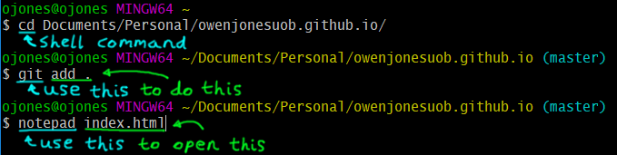
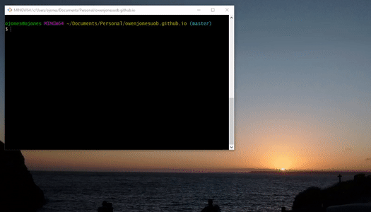

I thought I’d share another little time-saving trick I discovered earlier.
When I’m writing code I tend to use Git Bash to run commands, mostly because it (obviously!) works nicely with git and partly because… well, I think it looks nice. It’s so colourful! This is a valid reason for liking something, right?
Anyway, when you run a command in a terminal such as Git Bash, the first word is always an instruction to the terminal. The terminal decides:
- “Ah, I can do this!” (For shell commands such as
cd,mkdirandecho); or - “Nominate [program].” (For anything else)

Now, my go-to code/plaintext editor is Notepad++. (It’s great - I’d highly encourage you to have a look!)
Typing notepad [filename] opens the file in Notepad. But typing notepad++ [filename] doesn’t work. Very upsetting.

There is, however, a simple way to make this work - or, indeed, to add any little shortcut you like. These shortcuts are called aliases.
You define aliases in the .bashrc file, which contains settings that are loaded for Git Bash whenever you open it. This file lives in your home directory (in my case, my user folder ojones/) which can be quickly represented by a ~ in any commands.
If you’ve never edited your .bashrc file before, you might not have one. So first we can quickly create one in our home directory:
touch ~/.bashrcThen open it with the editor of your choice (for example, vim):
vim ~/.bashrcNow we’re going to add an alias for Notepad++ by adding the following line to the .bashrc file:
alias npp="/c/Program\ Files\ \(x86\)/Notepad++/notepad++.exe"The string is just the unix-style filepath to where Notepad++ is installed on my computer(notice that we’ve had to escape spaces and parentheses with backslashes). So we’ve just told Git Bash that if it sees the command npp (for “notepad-plus-plus”) it should go to that filepath, which results in it launching Notepad++ for me. Hooray!
But you don’t have to stop there. You can set aliases for anything you like.
alias npp="/c/Program\ Files\ \(x86\)/Notepad++/notepad++.exe";
alias gc="git commit -m \"Lazy commit\"";
alias doggo="printf $'
____,\'\`-, \n
_,--\' ,/::.: \n
,-\' ,/::,\' \`---.___ ___,_ \n
| ,:\'::/ :\'"\`:"\`--./ ,-^.:--. \n
|: ,:\':,\' \' \`. :\` \`-. \n
\:.,:::/:/ -:. \` | \` \`-. \n
\:::,\'//__.: ,: , , :.\`-. :. | : :. \n
\,\',\':/O)^. :\' : : \'__\` \` :::\`. .:\' ) \n
|,\' |\__,: : : \'/O)\`. :::\`: \' ,\' \n
|\`--\'\' \__,\' , ::::( ,\' \n
\` , \`--\' ,: :::,\'\ ,-\' \n
| ,: , ,::\' ,::: |,\' \n
|,: .( ,:::| \` \n
::\'_ _ :: ,::/:| \n
,\',\' \`-\' \ \`. ,:::/,:| \n
| : _ _ | \' ,::,\' ::: \n
| \ O\`\'O ,\', , :,\' ::: \n
\ \`-\'\`--\',:\' ,\' , ,,\' :: \n
\`\`:.:.__ \',-\',\' ::\' \n
\`--.__, ,::. ::\' \n
|: ::::. ::\' \n
|: :::::: ,::'"(Having said that, if you want to create aliases specifically for git commands then you might want to use git’s own alias system rather than defining general aliases in .bashrc. There’s a good explanation of how to do that here.)